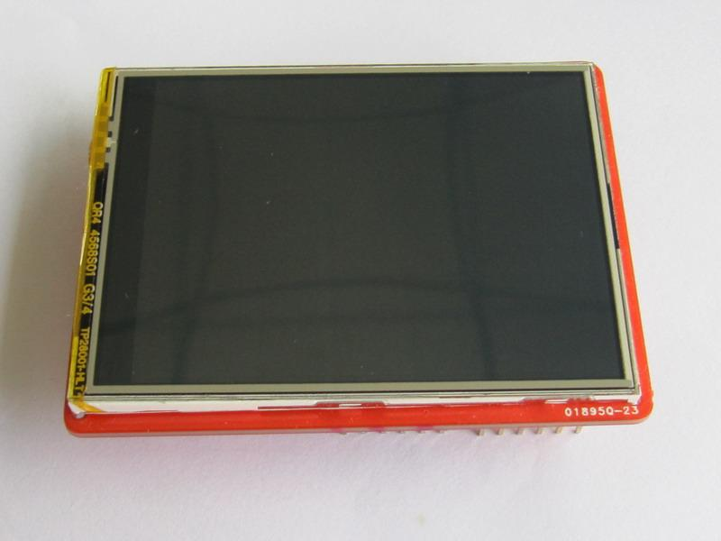
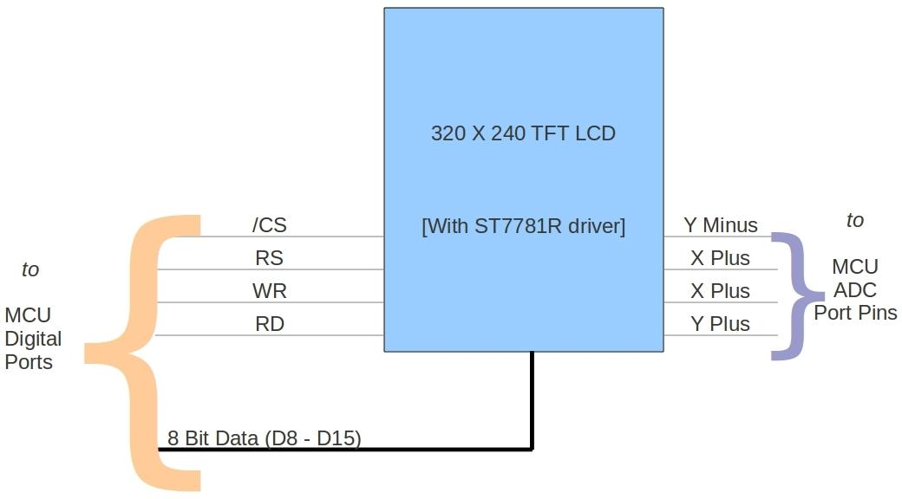

2.8" TFT Touch Shield is an Arduino / Arduino Mega compatible multicolored TFT display with a 4-wire resistive touch screen. It includes an Arduino shield compatible footprint for attachment. The TFT driver is based on professional Driver IC and with 8 bit data and 4 bit control interface.

| Item | Min | Typical | Max | Unit |
|---|---|---|---|---|
| Voltage | 4.5 | 5 | 5.5 | VDC |
| Current | / | / | 250 | mA |
| LCD Panel Size | 2.8 | inch | ||
| View angle | 60~120 | Deg | ||
| Resolution | 320x240 | / | ||
| LCD color | 65k | / | ||
| Backlight Type | LED | / | ||
| LCD driver IC | ST7781R | / | ||
| Interface Type | 10±2 | g | ||
| Interface Type | Parallel port ( 8bit Data + 4bit Control ) | / | ||
| Touch Screen | 4-Wire resistive touch screen | / | ||
| Active area | 43.2*57.3 | mm | ||
| ESD contact discharge | ±4 | KV | ||
| ESD air discharge | ±8 | KV | ||
| Dimension | 72.5x54.7x18 | mm | ||
| Weight | 24±2 | g | ||
Cautions

D0 - Unused.
D1 - Unused.
D2 - LCD data bit 8.
D3 - LCD data bit 9.
D4 - LCD data bit 10.
D5 - LCD data bit 11.
D6 - LCD data bit 12.
D7 - LCD data bit 13.
D8 - LCD data bit 14.
D9 - LCD data bit 15.
D10 - LCD CS pin, active low.
D11 - LCD RS pin.
D12 - LCD WR pin.
D13 - LCD RD pin.
D14(A0) - Touch Screen Y-.
D15(A1) - Touch Screen X-.
D16(A2) - Touch Screen Y+.
D17(A3) - Touch Screen X+.
D18(A4) - Unused.
D19(A5) - Unused.
The TFT library provides the following Application Programming Interfaces(API). The library makes use of direct access to PORT registers instead of Arduino APIs. This is to increase the speed of communication between MCU and TFT. At present, the library supports Arduino, Arduino Mega (1280 or 2560) and Seeeduino ADK Main Board compatible boards. In Mega the 8bit data port of TFT is distributed to different pins belonging to different ports. This decreases the speed of graphics drawing when compared to Arduino. The choice of port pins are purely based on Arduino / Mega port pin arrangement.
paintScreenBlack(void)
The TFT RAM can only be initialized in display-off mode, so this function only for clearing screen with black colour.
setXY(unsigned int poX, unsigned int poY)
Sets the cursor position to (poX,poY). This function is internally used by other graphics APIs.
setPixel(unsigned int poX, unsigned int poY,unsigned int color)
Sets the (poX,poY) pixel to color color. This function is internally used by other graphics APIs.
drawLine(unsigned int x0,unsigned int y0,unsigned int x1,unsigned int y1,unsigned int color) Draws a line from pixel (x0,y0) to pixel (x1,y1) with color color.
drawVerticalLine(unsigned int poX, unsigned int poY,unsigned int length,unsigned int color Draws a Horizontal Line of length length with color color starting from pixel (poX,poY).
drawHorizontalLine(unsigned int poX, unsigned int poY,unsigned int length,unsigned int color) Draws a Vertical Line of length length with color color starting from pixel (poX,poY).
drawRectangle(unsigned int poX, unsigned int poY, unsigned int length,unsigned int width,unsigned int color) Draws a rectangle starting from (poX,poY) of length length, width width and color color.
fillRectangle(unsigned int poX, unsigned int poY, unsigned int length, unsigned int width, unsigned int color) Draws a filled rectangle starting from pixel (poX,poY) of length length, width width and color color.
drawCircle(int poX, int poY, int r,unsigned int color) Draws a circle at (poX,poY) of radius radius and color color.
fillCircle(int poX, int poY, int r,unsigned int color Draws a filled circle at (poX,poY) of radius radius and color color.
drawChar(unsigned char ascii,unsigned int poX, unsigned int poY,unsigned int size, unsigned int fgcolor) Draws a character starting from (poX,poY) using inbuilt font of size size and with color fgcolor. This function is used by drawString() function.
drawString(char *string,unsigned int poX, unsigned int poY,unsigned int size,unsigned int fgcolor) Draws a string of text starting from (poX,poY) using inbuilt font of size size and with color fgcolor.
TFT Touch Shield uses the Adafruit Touch Screen Library. To understand the principle behind resistive touch screen refer External Links. In short, a 4-wire resistive touch screen provides two voltage divider each for X and Y axis. By applying proper voltages for each axis and scanning the ADC values the position of the touch can be detected. These values are always prone to noise. Hence a digital filter is used.
TouchScreen ts = TouchScreen(XP, YP, XM, YM, 300);
Where XP, YP, XM and YM are ADC port pins connected to XPlus, YPlus, XMinus and YMinus pins of Touch Screen. 300 is the resistance across X plates.
Point p = ts.getPoint();
p.x = map(p.x, TS_MINX, TS_MAXX, 240, 0);
p.y = map(p.y, TS_MINY, TS_MAXY, 320, 0);
TS_MINX, TS_MAXX, TS_MINY and TS_MAXY actually decides the extreme ends of the touch screen and actually forms the calibration parameters.
// Paint application - Demonstate both TFT and Touch Screen // This library is free software; you can redistribute it and/or // modify it under the terms of the GNU Lesser General Public // License as published by the Free Software Foundation; either // version 2.1 of the License, or (at your option) any later version. // // This library is distributed in the hope that it will be useful, // but WITHOUT ANY WARRANTY; without even the implied warranty of // MERCHANTABILITY or FITNESS FOR A PARTICULAR PURPOSE. See the GNU // Lesser General Public License for more details. // // You should have received a copy of the GNU Lesser General Public // License along with this library; if not, write to the Free Software // Foundation, Inc., 51 Franklin St, Fifth Floor, Boston, MA 02110-1301 USA #include <stdint.h> #include <TouchScreen.h> #include <TFT.h> #if defined(__AVR_ATmega1280__) || defined(__AVR_ATmega2560__) // mega #define YP A2 // must be an analog pin, use "An" notation! #define XM A1 // must be an analog pin, use "An" notation! #define YM 54 // can be a digital pin, this is A0 #define XP 57 // can be a digital pin, this is A3 #elif defined(__AVR_ATmega32U4__) // leonardo #define YP A2 // must be an analog pin, use "An" notation! #define XM A1 // must be an analog pin, use "An" notation! #define YM 18 // can be a digital pin, this is A0 #define XP 21 // can be a digital pin, this is A3 #else //168, 328, something else #define YP A2 // must be an analog pin, use "An" notation! #define XM A1 // must be an analog pin, use "An" notation! #define YM 14 // can be a digital pin, this is A0 #define XP 17 // can be a digital pin, this is A3 #endif //Measured ADC values for (0,0) and (210-1,320-1) //TS_MINX corresponds to ADC value when X = 0 //TS_MINY corresponds to ADC value when Y = 0 //TS_MAXX corresponds to ADC value when X = 240 -1 //TS_MAXY corresponds to ADC value when Y = 320 -1 #define TS_MINX 140 #define TS_MAXX 900 #define TS_MINY 120 #define TS_MAXY 940 int color = WHITE; //Paint brush color // For better pressure precision, we need to know the resistance // between X+ and X- Use any multimeter to read it // The 2.8" TFT Touch shield has 300 ohms across the X plate TouchScreen ts = TouchScreen(XP, YP, XM, YM, 300); //init TouchScreen port pins void setup() { Tft.init(); //init TFT library pinMode(0,OUTPUT); //Draw the pallet Tft.fillRectangle(0,0,30,10,BLACK); Tft.fillRectangle(30,0,30,10,RED); Tft.fillRectangle(60,0,30,10,GREEN); Tft.fillRectangle(90,0,30,10,BLUE); Tft.fillRectangle(120,0,30,10,CYAN); Tft.fillRectangle(150,0,30,10,YELLOW); Tft.fillRectangle(180,0,30,10,WHITE); Tft.fillRectangle(210,0,30,10,GRAY1); } void loop() { // a point object holds x y and z coordinates. Point p = ts.getPoint(); //map the ADC value read to into pixel co-ordinates p.x = map(p.x, TS_MINX, TS_MAXX, 240, 0); p.y = map(p.y, TS_MINY, TS_MAXY, 320, 0); // we have some minimum pressure we consider 'valid' // pressure of 0 means no pressing! if (p.z > ts.pressureThreshhold) { // Detect paint brush color change if(p.y < 15) { if(p.x >= 0 && p.x < 30) { color = BLACK; } if(p.x >= 30 && p.x < 60) { color = RED; digitalWrite(0,HIGH); } if(p.x >= 60 && p.x < 90) { color = GREEN; } if(p.x >= 90 && p.x < 110) { color = BLUE; digitalWrite(0,LOW); } if(p.x >= 120 && p.x < 150) { color = CYAN; } if(p.x >= 150 && p.x < 180) { color = YELLOW; } if(p.x >= 180 && p.x < 210) { color = WHITE; } if(p.x >= 210 && p.x < 240) { color = GRAY1; } } else { Tft.fillCircle(p.x,p.y,2,color); } } }